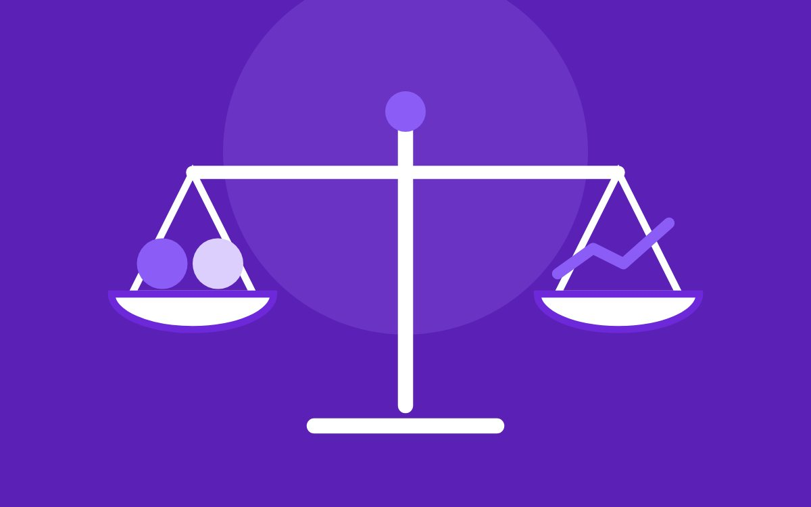

Блог
{{heading}}
Все статьи
Индексация
Почему страницы выпадают из индекса и как это исправить
2 ноября 2026
64
9
GEO-продвижение
GEO: как подготовить сайт к ответам нейросетей
29 октября 2026
118
21

Контекстная реклама
Яндекс Директ или SEO: что выбрать для нового сайта
27 октября 2026
52
14